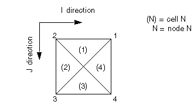
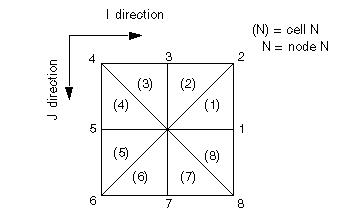

- A local radial grid may be defined in either a single column of
cells (using RADFIN), or in a box consisting of four columns of cells (using RADFIN4). The geometry of the
local grid may be defined using one of the following methods:
- Refinements in the R-direction may be defined by user-given DR values. In the Z-direction, refinements
can be specified by NZFIN / HZFIN data. Missing data are calculated automatically, so that
a radial grid can be defined by a minimum set of one RADFIN or RADFIN4 keyword and one INRAD keyword.
- In a block-centered host, DZ values may be input directly, with radii defined as for the
case (a). Use of user-defined DTHETA values is not recommended, as the local angles are usually
restricted by the host cell geometry.
- In a corner-point host, a local radial grid may be defined by
corner-point coordinates. Note that the local COORD data are expected in
cylindrical coordinates, relative to an origin at the center of the
refinement. (Note: Cartesian local COORD data are
defined relative to the global grid origin.)
- A local radial refinement defined through RADFIN can only be inserted in a single column of host cells, with NTHETA = 1 or NTHETA = 4. Such a radial
grid defined by user-specified corner points (in a corner-point host)
must be 3-dimensional (that is, NTHETA = 4).
A local radial refinement defined through RADFIN4 can only be inserted in a box of four columns of host cells, with NTHETA = 4 or NTHETA = 8. Such a radial
grid defined by user-specified corner points (in a corner-point host)
must be 3-dimensional (that is, NTHETA = 8).
A local radial grid cell must fit inside a single
host cell.
- The center of a radial refinement defined through RADFIN is assumed to be at the geometric center of the top host block.
The center of a radial refinement defined through RADFIN4 is assumed to lie at the central node of the top of the refined
box.
- The sides of the inner radial cells are assumed to be vertical.
- The innermost radius must be defined by INRAD.
- The radius for the inside of the outer local block can be defined
by OUTRAD. Otherwise it is calculated as RMAX /3.0
where RMAX is the maximum radius of a circle contained
within the radial refinement.
- You may provide some or all DR values. Any missing radii are completed as a geometric series (ECLIPSE
100), as follows:
No. of radii =
No. of user-defined radii
=
Radius of inside of outer local block =
Last user-defined
radius =
Then for to
where
- For local transmissibility calculations using RADFIN, the outer radius is taken as the area equivalent radius of the
host grid block, based on the top area of the host cell. When RADFIN4 is used, the equivalent radius is based on the
top area of the four host cells. For volumetrics and connections to
the global grid, the sides of the local grid are taken from the coordinate
lines for the host.
Note that the equivalent radii are shown in
the output reports for the local COORD values.
- The figure below shows the numbering convention used for connecting
local radial grids to the host when RADFIN is used:

Figure 56.1 The numbering convention used by RADFIN for connecting radial
LGRs to host cells
The radial cells are numbered so that Theta increases in
an anti-clockwise direction, starting from the quadrant corresponding
to the Y- face of the global cell. If necessary, the local coordinates
are rotated to align the radial cell with its host.
Reported COORD data will show the corrected
Theta values.
ECLIPSE 100
For a local radial refinement defined with RADFIN4, the topology is also arranged with theta increasing
anti-clockwise, but starting from the middle of the X+ (I+) face of
the refinement as shown in the following figure.

Figure 56.2 The numbering conventions used by RADFIN4 for connecting radial
LGRs to host cells
In the above case, Theta increases anti-clockwise
in (I,J) space, but there is of course no reason why the coordinate
system should not be right handed, in which case theta increases clockwise.
- Transmissibility calculations
For flow between local radial
blocks, the standard ECLIPSE method based on pressure equivalent radii
is used to compute transmissibilities.
Flow
between the outer local block and the adjoining host block is treated
as linear, but with the transmissibility center for the local block
taken at the pressure equivalent radius. With radii computed as described
earlier, and host cells which are approximately square in cross-section,
this method corresponds to the approach described by Pedrosa and Aziz (1986) and Ewing et al (1989) .